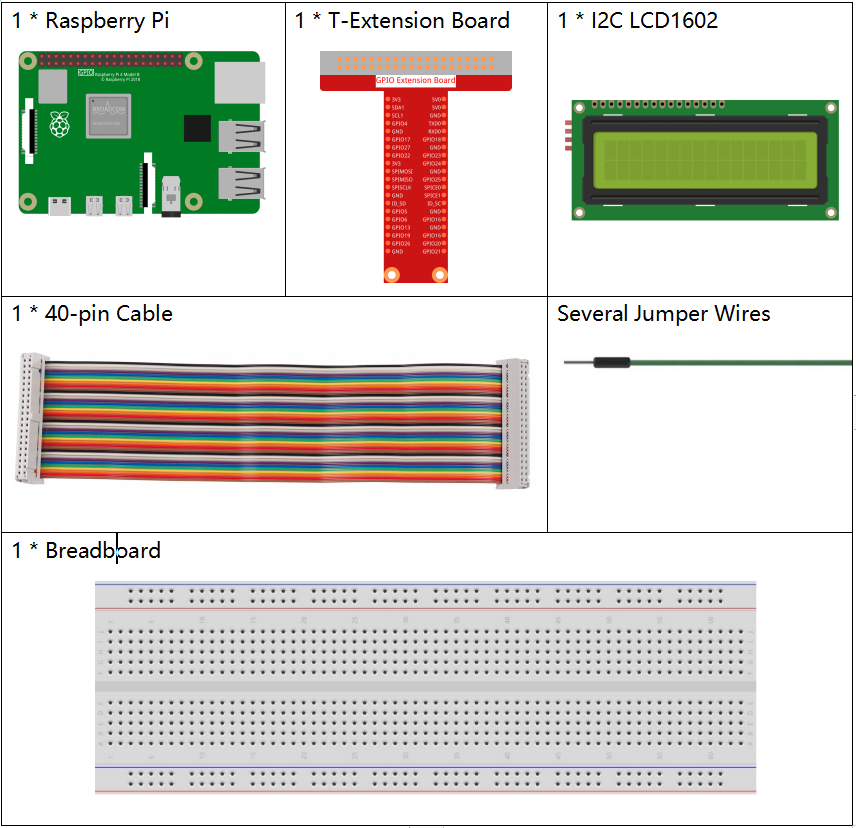
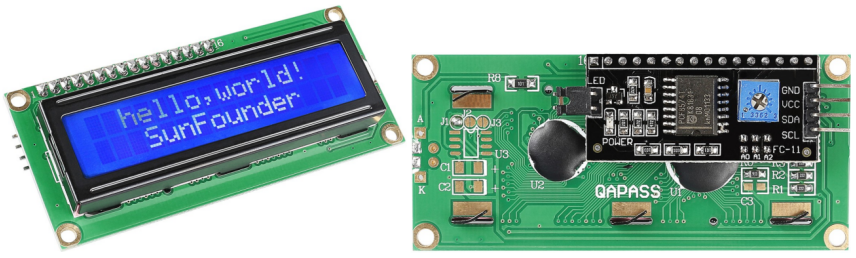

1.1.7 I2C LCD1602¶
Einführung¶
LCD1602 ist eine Flüssigkristallanzeige vom Zeichentyp, die gleichzeitig 32 (16 * 2) Zeichen anzeigen kann.
Komponenten¶
Prinzip¶
I2C LCD1602
Wie wir alle wissen, bereichern LCD und einige andere Anzeiger die Mensch-Maschine-Interaktion erheblich, weisen jedoch eine gemeinsame Schwäche auf. Wenn sie mit einem Controller verbunden sind, werden mehrere E / A des Controllers belegt, der nicht so viele äußere Ports hat. Es schränkt auch andere Funktionen der Steuerung ein. Daher wurde LCD1602 mit einem I2C-Bus entwickelt, um das Problem zu lösen.
I2C-Kommunikation
Der I2C-Bus (Inter-Integrated Circuit) ist ein sehr beliebter und leistungsstarker Bus für die Kommunikation zwischen einem Master-Gerät (oder Master-Geräten) und einem oder mehreren Slave-Geräten.
Der I2C-Hauptcontroller kann zur Steuerung des E / A-Expanders, verschiedener Sensoren, des EEPROM, des ADC / DAC usw. verwendet werden. Alle diese werden nur von den beiden Pins des Hosts gesteuert, der seriellen Datenleitung (SDA1) und der seriellen Taktleitung (SCL1).
Schematische Darstellung¶
T-Karte Name |
physisch |
SDA1 |
Pin 3 |
SCL1 |
Pin 5 |

Experimentelle Verfahren¶
Schritt 1: Bauen Sie die Schaltung auf.

Schritt 2: I2C einrichten (siehe Anhang. Wenn Sie I2C eingestellt haben, überspringen Sie diesen Schritt.)
Für Benutzer in C-Sprache¶
Schritt 3: Verzeichnis wechseln.
cd /home/pi/davinci-kit-for-raspberry-pi/c/1.1.7/
Schritt 4: Kompilieren.
gcc 1.1.7_Lcd1602.c -lwiringPi
Schritt 5: Ausführen.
sudo ./a.out
Nachdem die Kode ausgeführt wurde, werden auf dem LCD „Grüße“ und „Von SunFounder“ angezeigt.
Kode
Kode Erklärung
void write_word(int data){……}
void send_command(int comm){……}
void send_data(int data){……}
void init(){……}
void clear(){……}
void write(int x, int y, char data[]){……}
Diese Funktionen werden zur Steuerung des Open Source-Codes I2C LCD1602 verwendet. Sie ermöglichen die einfache Verwendung von I2C LCD1602. Unter diesen Funktionen wird init () zur Initialisierung verwendet, clear () wird zum Löschen des Bildschirms verwendet, write () wirdzum Schreiben der angezeigten Elemente verwendet und andere Funktionen unterstützen die obigen Funktionen.
fd = wiringPiI2CSetup(LCDAddr);
Diese Funktion initialisiert das I2C-System mit dem angegebenen Gerätesymbol. Der Prototyp der Funktion:
int wiringPiI2CSetup(int devId);
Parameter devId ist die Adresse des I2C-Geräts. Sie kann über den Befehl i2cdetect (siehe Anhang) ermittelt werden. Die devId des I2C LCD1602 ist im Allgemeinen 0x27.
void write(int x, int y, char data[]){}
In dieser Funktion ist data [] das Zeichen, das auf dem LCD gedruckt werden soll, und die Parameter x und y bestimmen die Druckposition (Zeile y + 1, Spalte x + 1 ist die Startposition des zu druckenden Zeichens).
Für Python-Sprachbenutzer¶
Schritt 3: Verzeichnis wechseln.
cd /home/pi/davinci-kit-for-raspberry-pi/python/
Schritt 4: Ausführen.
sudo python3 1.1.7_Lcd1602.py
Nachdem die Kode ausgeführt wurde, werden auf dem LCD „Grüße“ und „Von SunFounder“ angezeigt.
Kode
import LCD1602
import time
def setup():
LCD1602.init(0x27, 1) # init(slave address, background light)
LCD1602.write(0, 0, 'Greetings!!')
LCD1602.write(1, 1, 'from SunFounder')
time.sleep(2)
def destroy():
LCD1602.clear()
if __name__ == "__main__":
try:
setup()
except KeyboardInterrupt:
destroy()
Kode Erklärung
import LCD1602
Diese Datei ist eine Open Source-Datei zur Steuerung von I2C LCD1602. Es ermöglicht uns die einfache Verwendung von I2C LCD1602.
LCD1602.init(0x27, 1)
Die Funktion initialisiert das I2C-System mit dem angegebenen Gerätesymbol. Der erste Parameter ist die Adresse des I2C-Geräts, die mit dem Befehl i2cdetect erkannt werden kann (Einzelheiten siehe Anhang). Die Adresse des I2C LCD1602 lautet im Allgemeinen 0x27.
LCD1602.write(0, 0, 'Greetings!!')
Innerhalb dieser Funktion ‚Grüße !! ‚ist das Zeichen, das in der Zeile 0 + 1, Spalte 0 + 1 auf dem LCD gedruckt werden soll. Jetzt können Sie „Grüße! Von SunFounder “auf dem LCD angezeigt.
Phänomen Bild¶